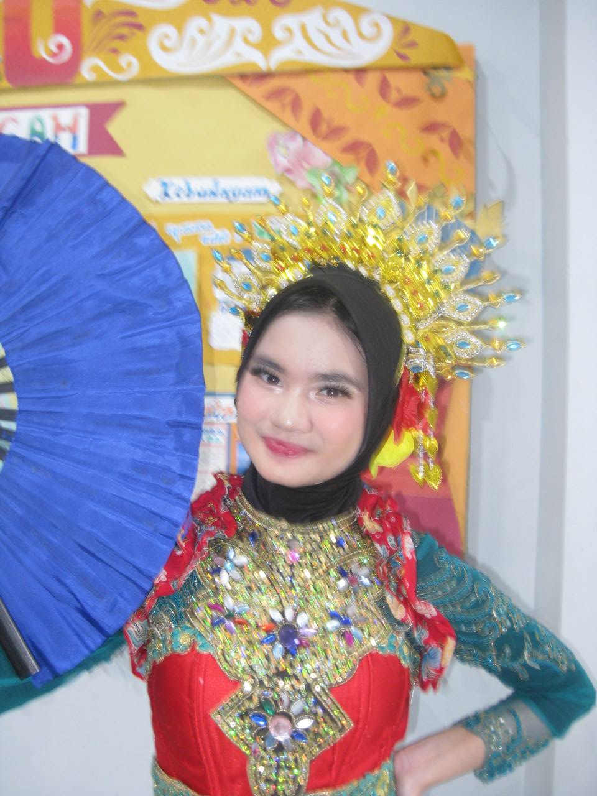
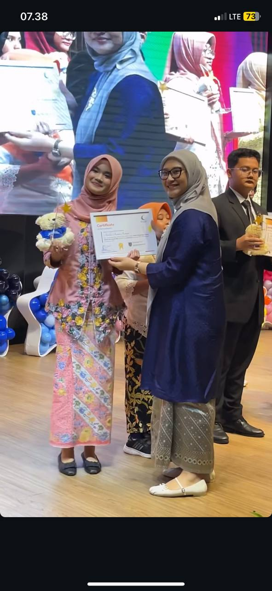
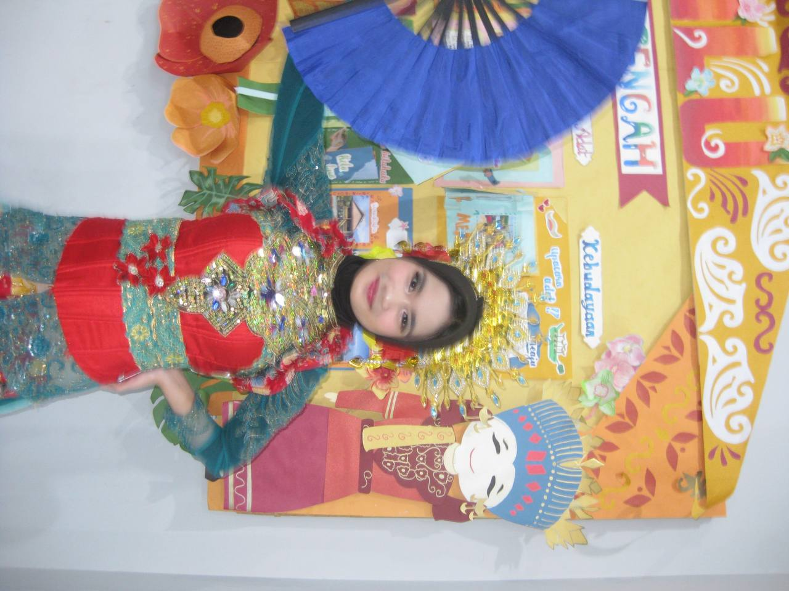
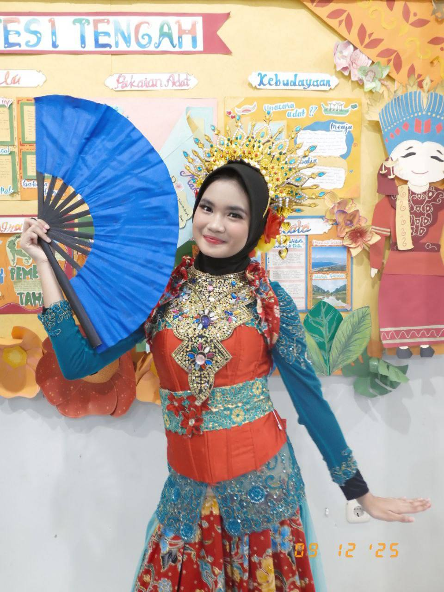

🎀 Created with love & passion 🎀
Website ini merupakan platform digital yang saya dedikasikan untuk mempublikasikan hasil Ujian Praktik Terintegrasi. Di sini, saya menyajikan karya video broadcasting yang berbasis pada teks argumentasi yang telah saya susun secara sistematis dan komprehensif.
Tujuan utama dari pembuatan website ini adalah sebagai portofolio digital untuk mendokumentasikan proses serta hasil belajar saya. Melalui platform ini, saya berharap dapat menunjukkan kompetensi yang telah saya pelajari selama mengikuti rangkaian kegiatan akademik dengan cara yang lebih modern dan terorganisir.
Selama menempuh pendidikan di SMPIT Al Haraki, saya merasakan pertumbuhan karakter yang signifikan. Sekolah ini tidak hanya memfasilitasi aspek akademis, tetapi juga memberikan ruang bagi siswa untuk mengembangkan potensi diri melalui program-program yang aplikatif. Peristiwa yang paling berkesan bagi saya adalah saat berkolaborasi dalam kepanitiaan sekolah. Di sana, saya belajar mengenai manajemen konflik, koordinasi tim, dan tanggung jawab terhadap tugas yang diberikan.



